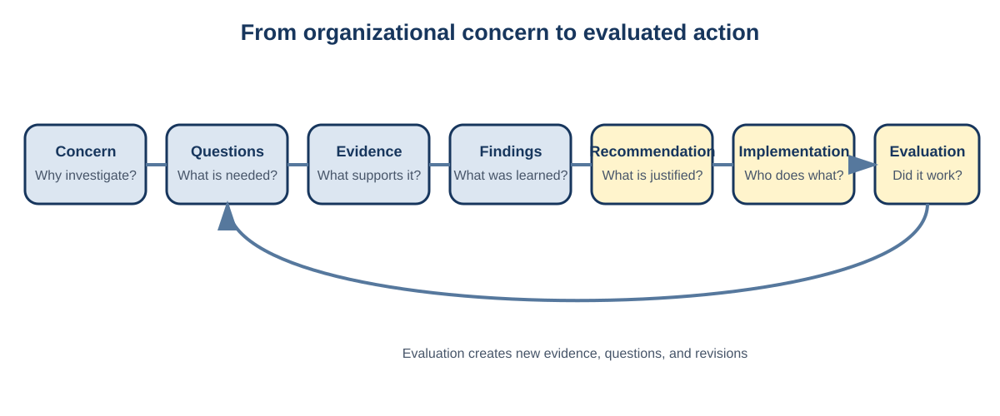

A practical project cycle contains six connected activities:
Frame: Understand the organization, decision,
audience, constraints, and intended use.
Plan: Define deliverables, responsibilities,
milestones, dependencies, risks, and review points.
Understand: Document the data, assess quality,
investigate context, and conduct exploratory analysis.
Analyze: Select, evaluate, and compare methods that
answer the analytical questions.
Interpret: Connect results to context, assumptions,
limitations, and practical consequences.
Communicate: Build a coherent report, presentation,
implementation plan, and final handoff.
The stages are connected rather than strictly sequential. Exploratory
analysis may reveal that the original question cannot be answered. A
model may expose a data-quality problem. Secondary research may show
that an important category definition has changed. Feedback may require
a different comparison or projection. Returning to an earlier stage is
responsible when the reason and resulting decision are documented.

A complete project connects the
organizational concern to evidence, action, and evaluation.